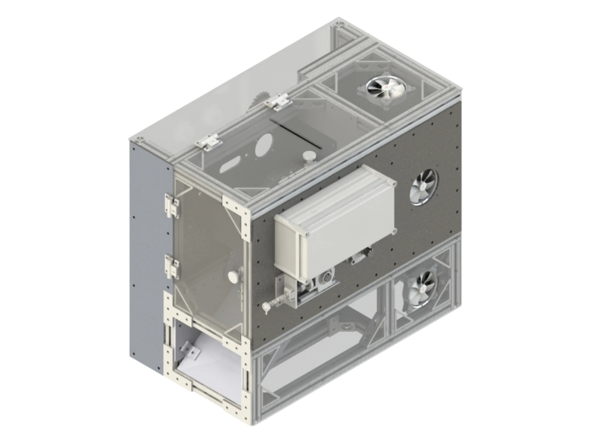
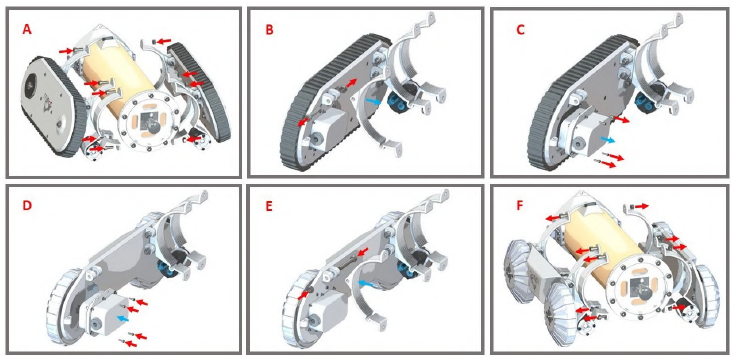
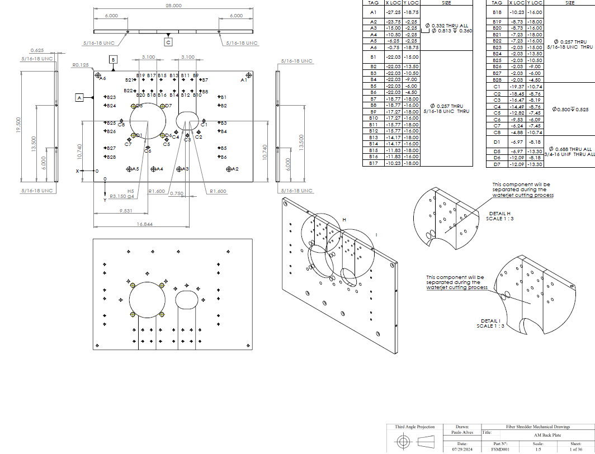
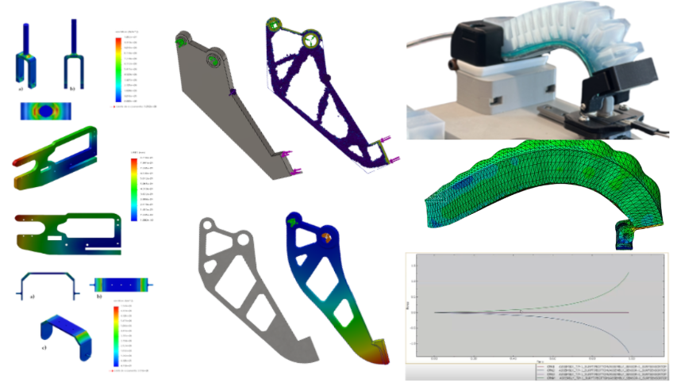
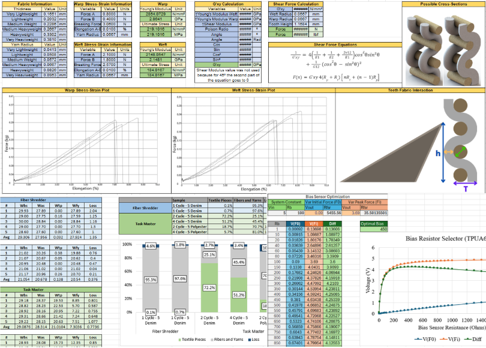
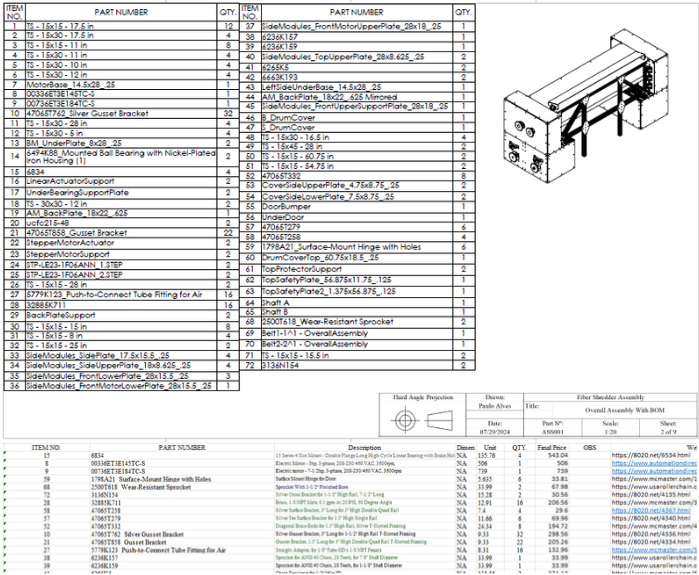

Mechanical Design & CAD
3D part and assembly modeling, mechanism development, and mechanical system integration.
From concept to manufacturing. From engineering challenges to practical solutions.
Mechanical Engineer with hands-on experience in mechanical design, product development, robotics, and industrial equipment. Skilled in transforming engineering concepts into functional systems through CAD design, prototyping, manufacturing, assembly, and testing. My work includes patented technologies and projects developed from initial concept through practical implementation.
Selected mechanical design, robotics, and product development projects.
Core engineering methods, documentation, and design support tools.

3D part and assembly modeling, mechanism development, and mechanical system integration.

Designing for practical fabrication, efficient assembly, prototyping, and hands-on manufacturing.

Manufacturing drawings with dimensions, tolerances, part specifications, and assembly details.

Structural analysis and simulation used to evaluate behavior and guide design decisions.

Custom calculation tools, data analysis, experimental results, and parameter optimization.

Part lists, component quantities, sourcing details, and manufacturing documentation.
Explore patents, research publications, professional recommendations, and technical certifications.
Graduate Research Assistant
Mechanical Design & Development
Sole engineer responsible for the complete mechanical development of the laboratory-scale textile shredding machine. Independently managed CAD design, component manufacturing, assembly, experimental testing, and iterative mechanical improvements, reporting key developments to my research advisor.
Conventional textile shredding systems provide limited control over fiber separation, often producing excessive fabric fragmentation and inconsistent fiber quality. A flexible experimental platform was needed to investigate and optimize mechanical recycling processes.
Developed a modular shredding system featuring custom carding-wire drums, adjustable rotational speed, inter-drum spacing, and processing time. Integrated pressurized-air systems for material transport between drums and pneumatic actuation of the discharge door, enabling controlled experimentation and mechanical optimization.
The reconfigurable platform enabled systematic testing across different textiles and operating conditions. Mechanical improvements enhanced material flow, promoted shear-dominant fiber separation, and increased fiber recovery while reducing unwanted fabric fragments.
Mechanical Design Engineer
Lead Mechanical Design Engineer
Sole engineer responsible for the mechanical redesign and industrial scale-up of the textile shredding machine. Led CAD development, component design, manufacturing documentation, and DFM/DFA implementation. Currently overseeing component fabrication and assembly.
The laboratory-scale machine had limited processing capacity and required significant redesign to support industrial throughput, manufacturability, structural reliability, and future scalability.
Developed a scalable parametric CAD architecture and a multi-component shredding drum designed for cost-effective manufacturing. Applied GD&T and DFM/DFA principles to critical interfaces and created an Excel-based sizing tool to automatically adjust machine dimensions and support future configurations.
Completed the mechanical design and manufacturing documentation for an industrial-scale textile shredding system. The estimated manufacturing cost is more than 75% lower than the selling price of a comparable commercial machine. The parametric architecture enables rapid design scaling and reconfiguration, while manufacturing and assembly remain in progress.
Mechanical Engineering Intern
Co-Designer
Co-developed the complete mechanical design alongside another mechanical engineering intern. Contributed to CAD modeling, component design, locomotion mechanisms, and system integration, with engineering decisions reviewed by the supervising engineer.
Mining pipelines require inspection in confined, wet, and debris-filled environments. Conventional methods are costly, hazardous, and difficult to adapt to varying pipe diameters and operating conditions.
Developed a modular robotic platform featuring interchangeable wheel and tracked locomotion systems for different pipe configurations. Integrated a sealed mechanical enclosure, protective interfaces, and thermal management to prevent water and dust ingress while protecting internal electronic components.
Successfully manufactured and tested the robot, demonstrating its modular locomotion capabilities and adaptability to different pipe configurations. The complete robotic system achieved IP67 certification, validating protection against dust ingress and temporary water immersion. The technology also resulted in a granted patent.
Mechanical Engineering Intern
Sole Mechanical Designer
Solely responsible for the mechanical development of a LiDAR-based conveyor screening system. Independently designed the structural components, protective enclosure, and sensor mounting mechanisms. Managed mechanical design decisions and supervised component fabrication and assembly.
Conveyor screening inspections exposed workers to hazardous operating areas. Dust, moisture, and continuous vibration created challenges for reliable sensor positioning, environmental protection, and thermal management.
Developed a robust mechanical system featuring an IP67-sealed enclosure, adjustable LiDAR mounting mechanisms, and vibration-resistant structural supports. Integrated a Peltier-based active cooling system with passive heat-dissipation fins on the hot side to manage internal temperatures while maintaining environmental sealing.
Successfully manufactured, installed, and field-tested the system on an operating conveyor. The enclosure was tested and validated to IP67 standards, while the integrated cooling and adjustable mounting architecture supported reliable sensor operation in harsh mining conditions. The technology also resulted in a granted patent.
Mechanical Engineering Intern
Mechanical Design & Development
Collaborated with a mechanical engineer and another engineering intern on mechanical design and continuous improvement. Responsible for transmission development, chassis modifications, CAD modeling, manufacturing drawings, preventive maintenance, and mechanical improvements. Participated in laboratory maintenance and field testing.
Inspection robots operating in caves and confined industrial environments face uneven terrain, debris, moisture, and limited accessibility. These conditions increase mechanical wear, complicate maintenance, and demand robust environmental protection.
Developed transmission and chassis improvements to enhance mechanical reliability and serviceability. Redesigned access points to simplify internal component replacement and preventive maintenance. Implemented sealing solutions to ensure IP67 compliance while maintaining accessibility to critical mechanical and electronic components.
Improved robot maintainability, component accessibility, and mechanical robustness through iterative redesign. Supported successful IP67 certification and participated in laboratory and field testing to evaluate the robot’s performance in demanding operating conditions.
Mechanical Engineering Intern
Independent Mechanical Design
Independently conceived and developed a redesigned mechanical architecture for the EspeleoRobo. Responsible for the complete mechanical design, CAD modeling, component development, and engineering decisions. Presented the proposed redesign to senior engineers for evaluation.
The existing robot’s integrated mechanical architecture complicated maintenance and component replacement, requiring extensive disassembly. Limited internal accessibility also increased servicing time and restricted system reconfiguration.
Designed independent motor and transmission modules for each wheel, enabling rapid replacement without major disassembly. Developed a simplified chassis with upper and lower access doors, dedicated lifting structures, and mounting interfaces for external equipment and sensors.
Completed and presented a modular mechanical redesign intended to simplify assembly, improve component accessibility, and reduce maintenance complexity. The proposal was submitted for technical evaluation but had not been implemented when my internship ended.
Mechanical Engineering Intern
Independent Product Development
Independently developed the complete mechanical system, from concept to functional prototype, in less than one week. Responsible for CAD design, fabrication, assembly, and iterative improvements. Collaborated with other engineers during field testing and delivered the final operational device.
RFID tags placed before blasting frequently suffered damage, while manual placement after detonation exposed workers to unstable mining areas. A safer deployment method was required.
Designed a drone-mounted mechanism capable of carrying and selectively releasing up to ten RFID tags. Integrated a servo-actuated release mechanism, snap-fit mounting interface, and balanced component arrangement to minimize interference with drone stability.
Successfully manufactured, field-tested, and delivered a fully functional deployment system within one week. The device enabled remote tag placement without requiring workers to enter hazardous areas. The innovation resulted in a granted patent, with my name listed as an inventor.
Graduate Research Assistant
Mechanical Design & Controls Integration
Independently designed, fabricated, and assembled the complete mechanical testing platform. Collaborated with a controls engineer on electronics and software integration to enable automated testing procedures. Personally conducted experimental testing and validation.
Commercial sensor testing equipment can be expensive and difficult to customize for experimental research. A flexible, low-cost platform was needed to characterize force and strain sensors under controlled loading conditions.
Developed a modular electromechanical testing platform featuring a rigid mechanical structure, interchangeable fixtures, a precision linear actuator, and integrated load and position sensing. Combined mechanical hardware with control software to enable both force-controlled and displacement-controlled testing procedures.
Successfully manufactured, assembled, and validated a functional testing platform. Conducted experimental sensor characterization, including drift, hysteresis, and repeatability measurements, providing a customizable solution for research and sensor development.
Mechanical Engineering Intern
Independent Mechanical Design & Development
Solely responsible for the complete mechanical design of the railway inspection robot. Developed CAD models, mechanical assemblies, manufacturing drawings, and a Bill of Materials (BOM). Independently made key engineering decisions and incorporated feedback from technical reviews.
Railway inspection in high-risk mining areas presents significant safety challenges due to restricted human access. A remotely operated platform was needed to enable track inspection without exposing personnel to hazardous conditions.
Designed a modular inspection robot featuring motorized propulsion with standardized railway wheels. The structure incorporated 30 × 30 mm aluminum extrusions, machined metal components, and 3D-printed parts. Integrated adjustable camera and lighting mounts to support comprehensive rail inspection and future sensor expansion.
Completed the mechanical design, assembly architecture, and manufacturing documentation. The project remained at the design stage because communication restrictions within the intended operating area prevented implementation and field testing.
Undergraduate Student — SAE Aero Design Team Member
Fuselage Mechanical Designer & Aircraft Assembly Lead
Responsible for the complete mechanical design of the aircraft fuselage. Participated in manufacturing, developed detailed assembly instructions, and led the assembly of the entire aircraft. Collaborated on engineering decisions and participated in structural and flight testing.
SAE Aero Design competition requirements demanded a lightweight aircraft capable of maximizing payload capacity while maintaining structural integrity, flight stability, and manufacturability under strict design constraints.
Designed a lightweight fuselage using balsa wood, MDF, carbon fiber, carbon tubes, and composite materials. Applied CAD modeling, structural design principles, and weight-distribution considerations to optimize strength-to-weight performance. Developed assembly documentation and coordinated the integration of aircraft components.
Successfully manufactured, assembled, and flight-tested the complete aircraft. The design demonstrated reliable flight performance and contributed to the team’s advancement to the SAE Aero Design First Division.
Graduate Research Assistant — Stevens Institute of Technology
Flexible Sensor Design & Additive Manufacturing
Independently designed, fabricated, and experimentally validated flexible piezoresistive sensors during PhD research. Responsible for parametric CAD modeling, substrate preparation, Direct Ink Writing (DIW), sensor assembly, and experimental characterization.
Soft robotic systems require flexible sensors capable of measuring mechanical deformation without restricting movement. Conventional sensors often lack adaptability to different geometries, materials, and sensing requirements.
Developed a customizable family of sensors for force, strain, bending, and pressure measurements, including sensor arrays for pressure distribution mapping. Combined flexible substrates, multilayer structures, and DIW-printed piezoresistive patterns with parametric geometries for integration into soft robotic systems.
Successfully developed and validated 3D-printed force and strain sensors, achieving approximately 90% measurement accuracy and demonstrating repeatability over 1,000 testing cycles. Iterative design improvements increased sensor sensitivity by at least 500%. The customizable sensor architectures also enabled integration into soft robotic systems for force, strain, and bending measurements.
I create engineering technical reports that translate complex analyses into clear, actionable design decisions. By combining analytical calculations, automated tools, and visual outputs such as stress, displacement, and load diagrams, I ensure accuracy and traceability. My structured approach enables fast validation and confident application to real world mechanical systems.
I build dynamic spreadsheets that execute and validate mechanical design calculations with speed and precision. From stress and strain analysis to force modeling and tolerance stack-ups, these tools enable rapid iteration and reliable, design-ready results.
I develop dynamic spreadsheets that turn raw data into actionable engineering insights. Through parameter sweeps, structured datasets, and clear visualizations, I drive fast evaluation of performance, trends, and design trade-offs.
I leverage advanced simulations to predict failure, optimize performance, and eliminate design uncertainty before fabrication. My work includes stress-strain analysis, large deformation modeling, and hyperelastic material simulation for soft and compliant systems. I apply topology optimization to aggressively reduce weight while maintaining structural integrity, using simulation results to drive fast, confident, and production-ready design decisions.
I develop standardized, production-ready engineering drawings that ensure accuracy, consistency, and manufacturability. My work includes GD&T drawings in accordance with ASME Y14.5, tolerance stack-up analyses, detailed part drawings, and full assembly drawings. By clearly defining dimensions, tolerances, and functional requirements, I enable reliable manufacturing, inspection, and assembly, ensuring designs perform as intended in real-world applications.
I develop CAD-driven Bills of Materials fully integrated with dynamic Excel spreadsheets to create a centralized and efficient sourcing workflow. Each BOM links directly to supplier quotes, websites, CAD models, and mechanical drawings, enabling fast access to critical information during design and procurement. This approach improves traceability, reduces sourcing time, and ensures consistency between design and manufacturing. By structuring and automating BOM data, I streamline the transition from concept to production and support accurate, scalable system builds.
BR 102021018519-8 A2
BR 102021010685-9 A2
BR 102021005143-4 A2
WO 2024/243033 A1
“I'd recommend him for any design problem you need to fix and build - any team you need to lead - any colleague who needs help learning new concepts - and any concept you need to make reality.”
“Paulo is an incredibly hard worker and creative problem solver and is one of the top graduate students I've had the pleasure with whom to interact and work.”
“Beyond his expertise as an engineer, Mr. Alves also possesses strong leadership skills and has established himself as a thought leader on our research team and within the discipline of mechanical and industrial engineering.”
IEEE Robotics and Automation Letters · 2025
View Publication ↗Journal of Manufacturing Science and Engineering · 2024
View Publication ↗ASME IDETC/CIE · 2024
View Publication ↗ASME Manufacturing Science and Engineering Conference · 2023
View Publication ↗ASME IDETC/CIE · 2023
View Publication ↗26th International Congress of Mechanical Engineering · 2021
View Publication ↗Simpósio Brasileiro de Automação Inteligente (SBAI) · 2021
View Publication ↗Simpósio Brasileiro de Automação Inteligente (SBAI) · 2021
View Publication ↗Latin American Robotics Symposium (LARS/SBR/WRE) · 2020
View Publication ↗Master’s Thesis · University of Minnesota · 2023
Undergraduate Thesis · 2022